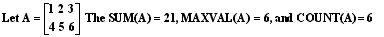
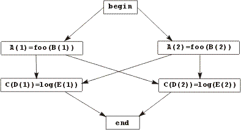

hyPACK-2013 Mode 1 : Parallel Programming Using Fortran 90 & Fortran 95 languages
|
MPI & Fortran 90 programs on Dense & Sparse Matrix Computations -
Vector - Vector, Matrix-Vector, Matrix-Matrix Multiplication Algorithms
and execute on Message Passing Cluster or Multi Core Systems that support
MPI library. |
List of f90/f95 Programs
|
|
Example 1
|
Fortran 90 program to print Hello World program.
|
Example 2
|
Fortran 90 program to print Welcome Message .
|
Example 3
|
Fortran 90 program to find equation of line joining two distinct points .
|
Example 4
|
Fortran 90 program to compute Matrix-Vector multiplication using intrinsic function MATMUL ( Use Math Library function)
|
Example 5
|
Fortran 90 program to find root of a quadratic equation.
|
Example 6
|
Fortran 90 program for Least Square Approximation method.
|
Example 7
|
Fortran 90 program to find the roots of equation f(x) = 0 using Newton Raphson
method.
|
Example 8
|
Fortran 90 program to solve a system of linear equations Ax = b using
Gaussian Elimination method.
|
Example 9
|
Fortran 90 program to compute Matrix and Matrix Multiplication
using block checkerboard partitioning and Cannon Algorithm.
|
Example 10
|
Write an MPI fortran90 program performing MPI I/O to single file (Using MPI 2.0).
|
| |
|
|
Introduction - f90 Language
|
|
The key to make better and more effective use of computers lies in
the programming languages, which are used to define the probe and to specify
the method of its solution in terms which can be understood by a computer
system. Most of these major languages are particularly suited to a particular
class of problems, although this class is often very wide. Fortran is
one such language, and is particularly well suited for almost all scientific
and technological problems, as well as to a wide range of other problem
areas - especially those with a significant numerical or computational
content.
Fortran 90 & Fortran 95 is the latest version of the Fortran language and provides
a great many more features than its predecessors to assist the programmer
in writing programs to solve problems of a scientific, technological or
computational nature. Furthermore, because of Fortran's pre-eminent position
in these areas, programs written in Fortran 90 can readily be transferred
to execute correctly, on other types of computers in a way that is Fortran has also
been the dominant computer language for engineering and scientific applications
in academic circles and has been widely used in other, less obvious, areas,
such as musicology.
Fortran 90 allows access to all this experience, while
adding new and more powerful facilities to the Fortran language.
Fortran has evolved over 35 years in what has often been a pragmatic
fashion, but always with the emphasis on efficiency and ease of use. However,
FORTRAN 77 did not have many of the features, which programmers using
other, newer, languages had come to find invaluable, Fortran 90, therefore,
rectifies this situation by adding a considerable number of very powerful
new features while retaining all of FORTRAN 77. In particular, many of
the new features that are present in Fortran 90 will enable Fortran programs
to be written more easily, more safely and more portably.

|
|
Basic f90 Concepts
|
|
Fortran 90 - Basic Building Blocks
Fortran 90 program contains many of the basic building blocks and concepts.
The first line of Fortran 90 program should be
PROGRAM ProgName
Every main program unit must start with a PROGRAM statement, which consists
of the word PROGRAM followed by the name of the program. This name must
follow the rules, which apply to all Fortran 90 names, namely
- It must begin with a letter - either upper or lower case.
- It may only contain the letter A-Z and a-z, the digits 0-9, and
the underscore character _.
- It must consist of a maximum of 31 characters
In Fortran 90, names and keywords, upper and lower case letters are treated
as identical, but can be used by the programmer to assist in the readability
of the program.
The name of the program should be chosen to indicate what the program
does and should be different from any other names used for other purposes
elsewhere in the program.
Also that there may be any number of blanks between successive words
in a Fortran 90 statement, as long as there is at least one, but they
will be treated as though there was only one by the compiler when it is
analyzing the program. It is not necessary to include blanks between successive
items in a list separated by commas or other punctuation characters, although
they may be included if desired to make the program easier to read. However,
it is not permitted to include spaces within a Fortran keyword or a user-specified
name, except when using the older fixed form style of programming.
IMPLICIT NONE
This is a special statement, which is used to inhibit a particularly undesirable
feature of Fortran, which is carried over from earlier versions of Fortran.
It should always be placed immediately after the
PROGRAM statement.
! This program calculates the equation of a circle passing
! through three points
These two lines are comments.
A comment is a line, or part of a line, which is included purely for information
for the programmer or anyone else reading the program; it is ignored by
the compiler. A comment line is a line whose first non-blank character
is an exclamation mark, !; alternatively, a comment, preceded by an exclamation
mark, may follow any Fortran statement or statements on a line. User shall normally use comment lines in
example programs, but will also use trailing comments where these are
more appropriate.
! Variable declarations
REAL :: x1, y1,
x2, y2, x3, y3, a, b, r
The first of these lines is a comment which indicates that the line following
contains one or more variable declarations. It is not obligatory, but
such comments help a reader to follow the program more easily.
PRINT *, "please
type the coordinates of three points"
PRINT *, "in the order x1, y1, x2, y2, x3, y3"
The above two statements are called executable statements. These particular
executable statements are known as list-directed output statements and
will cause the text contained between the quotation marks (or quotes)
to be displayed on your computer's default output device, probably the
screen.
Read
*, x1, y1, x2, y2, x3, y3 ! Read the three points
This statement is clearly closely related to the previous two executable
statements and has a very similar structure. It is called a list-directed
input statement and will read information from the keyboard, or other
default input device.
CALL calculate_circle
(x1, y1, x2, y2, x3, y3, a, b, r)
The CALL statement causes the processing of the main program unit to be
interrupted and processing to continue with the procedure, or subroutine,
whose name is given in the statement. The items enclosed in parentheses
following the procedure name are known as arguments and are used to transmit
information between the main program and the procedure.
PRINT *, "The
center of the circle through these points is &
& (",a,",",b,")"
The first PRINT statement, however, incorporates a new concept - that
of continuation line. If the last non-blank character of a line is an
ampersand, then this is an indication that the statement is continued
on the next line. There are two cases here. If, as in this case, the ampersand occurs in
character context, that is, in the middle of a character string enclosed
quotation marks (or one enclosed in apostrophes), then the first non-blank
character on the next line must also be an ampersand, and the character
string continues from the character after that ampersand. Thus the two
lines above are identical to the single line
PRINT *,"The
center of the circle through these points is (", 1, ",
", b, ")"
(where the small type is used here solely to fit the whole statement on
a single line).
The other situation is where the first ampersand does not occur within
character string enclosed in quotes or apostrophes. In this case there
are two possibilities. The first is that, as in the character string case,
the first non-blank character of the next line is an ampersand, in which
case the effect is just as before. However if the first non-blank character
on the next line is not an ampersand then the effect is as if the whole
of that line follows the previous one (excluding the ampersand). Thus,
for example, the statement discussed earlier could also be written
CALL calculate_circle
(x1, y1, x2, y2, x3, y3, & &a, b, r)
which would be identical, as far as the compiler was concerned, with the
original version, or
CALL calculate_circle
(x1, y1, x2, y2, x3, y3, & a, b, r)
Which would be treated as though there were a number of spaces before
a although, as those spaces come between items in the list of arguments,
they do not matter.
These two PRINT statements are different from the earlier ones in that
they will print variable information as well as constant character strings.
END PROGRAM ProgName
Final Statement of Fortran 90 Program
The final statement of a program must be an END statement. In this context
it can take three forms:
END or
END PROGRAM or
END PROGRAM ProgName
Where name, if present, must be the same as the name on the corresponding
PROGRAM statement. In general it is both a good practice, and also makes the
program easier to follow, to use the third, full, form of the statement.
As might be expected, execution of the END statement brings the execution
of the program to an end, and control is returned to the computer's operating
system.
Strucure of a Fortrran 90 Program
The overall structure of a Fortran 90 main program unit is as below :
PROGRAM name
Specification statements
.
.
Executable statements
.
.
END PROGRAM name
|
|
Data Parallel Programming Model Features
|
|
Several features characterize the data parallel programming model. Some
of them are quite different from those in shared-variable and message
passing models. The important features are listed below.
-
Single threading: From the programmer's viewpoint, a data-parallel
program is executed by exactly one process, with a single thread of
control. In other words, as far as control flow is concerned, a data-parallel
program is just like a sequential program. There is no control parallelism.
-
Parallel operations on aggregate data structure: A Single step (Statement)
of a data-parallel program can specify multiple operations that are
simultaneously applied to different elements of an array or other aggregate
data structure.
-
Loosely synchronous: There is an implicit synchronization
after every statement. This statement-level synchrony is loose, compared
with tight synchrony in an SIMD system that synchronizes after every
instruction.
-
Global naming space: All variables reside in a single address
space. All statements can access any variable, subject to the usual
variable scope rules. This is a contrast to the message-passing approach, where variables may reside in different address
space.
-
Implicit interactive: There is an implicit barrier
after every statement, no need for explicit synchronization
in a data-parallel program. Communication is implicitly done by variable
assignment.
-
Implicit data allocation: The programmer does not have to
explicitly specify how to allocate data. The programmer may give the
compiler hints about data allocation to improve data locality and reduce
communication.
|
|
Data Parallel Programming Model : Fortran 90 Parallelism Features
|
|
Fortran 90 Parallelism Features :
Fortran 90 standard has significantly extended the array capability of
Fortran 77. In Fortran 90, the entire array or a portion of an array
(called an array section) may appear as an operator.
Array Sections: All intrinsic operators and functions may be applied
to whole arrays or array sections, operating element-wise. It is also
possible to perform parallel array operations that are not element-wise,
through intrinsic functions.
Example 1 : Array handling in a Fortran 90 Program
Real, dimension (3, 3) :: A
Real, dimension (2, 2) :: B,C
S1: C=0
S2: B=A (1:3:2, 2:3)
S3: Where (B-6) > 0) C = sin(A(1:2, 1:2))
For a given array A, the results of the above code are
Interpretations: The four features of the data-parallel programming
style can be elaborated with reference to example 1.
-
Single threading and loosely synchronous: The code consists of three
statements S1, S2, S3, which are executed as a single thread, one after
another, Statement S2 (S3) does not start until all operations of S1
(S2) finish.
-
Parallel array operations: A statement may contain multiple operations
on array elements, which are executed simultaneously. Statement S1 assigns
0 to all four elements of array C. Statement S2 assigns four elements
of array A to array B. The where statement S3 assigns array
C according
to the condition (B-6) > 0. Only those elements of C where the condition
is true are modified. The two elements in the first row of C are not
changed, because the condition is false.
-
Global naming space: All array variables and elements are visible
to all statements. There is no notion of processor private data.
Array Shaping: The number of dimensions of an array is called
its rank. The variables A, V and C in Example
6.1 are all rank-2 arrays.
An array section is selected by using a three-tuple L:U:S (called
subscript triplet) for each array dimensions, where L, U, and
S are the lower-bound,
the upper bound, and the stride of the array section. Each of L, U, and
S can be any scalar expression, but the stride expression must be zero.
When the stride part is missing, a default stride of 1 is assumed. Thus,
A(1:3:2, 2:3) is the array section formed by the first and the third
rows and the second and the third columns of an array A.
When several array or array section appear in a statement, they must
be conformable. For instance, in an array addition X +Y, the two arrays
must have the same elements. Thus 2 x 3 arrays have the same shape, but
a 2 x 3 array and a 3 x 2 array do not. When an operator is applied to a
scalar s and an array X, the scalar s is first expanded to an array of the
same shape X, with all elements being s. This is shown in example 1 where B-6 is computed
in the following way.
Intrinsic Functions in Fortran 90
Besides element-wise array operation discussed above, Fortran 90 provides
additional intrinsic functions to manipulate arrays as a whole. We discuss
several below:
Matrix Operations: Fortran 90 provides several operators that operate
on entire arrays. For instance, a matrix X can be transposed by calling
transpose(X). The matrix multiplication function matmul
multiplies an m x n array X by an n x p array
Y and returns an m x p array.
An example is the statement Z = matmul(X,Y), where
Z must be an
m x p array.
Array Construction: A rank-1 array can be created through an array
constructor, which is a sequence of values separated by commas and
delimited by "(/" and ")/". For instance, a three-element
vector X can be constructed by assignment X=(/1,3,5) or, equivalently, by
X=(/1:5:2/).
Another way to create an array is to use the intrinsic function spread,
which constructs a new array by adding an extra dimension and copying
the operand.
For instance, the function spread ((/ 1,3,5/), 1, 3) makes 3 copies of
(/1,3,5/), and spreads them along dimension 1 (the row dimension). The
function spread ((/1,3,5/), 2,2) makes 2 copies of (/1,3,5/), and spreads
them along dimension 2 (the column dimension). The results are shown as
follows:
Vector Reductions: Fortran 90 supports several intrinsic reduction functions,
as listed in Table 6.1, where the arguments DIM and MASK are optional.
|
|
Function
|
Meaning
|
|
SUM(X,
DIM, MASK)
|
The
arithmetic sum of the elements of array X |
|
PRODUCT(X,
DIM, MASK)
|
The
arithmetic product of the elements of array X |
|
MAXVAL(X,
DIM, MASK)
|
The
arithmetic maximum of the elements of array X |
|
MINVAL(X,
DIM, MASK)
|
The
arithmetic minimum of the elements of array X |
|
ALL(X,
DIM, MASK)
|
The
logic product (AND) of the elements of array X |
|
ANY(X,
DIM, MASK)
|
The
logic sum (OR) of the elements of array X |
|
COUNT(X,
DIM, MASK)
|
The
number of the elements of array X |
|
MAXLOC(X,
MASK)
|
The
location of the maximal element of array X |
|
MINLOC(X,
MASK)
|
The
location of the minimal element of array X |
|
Table 6.1 Reduction Functions in Fortran 90
Several examples to illustrate how to apply these functions are as below:

The DIM argument is used to restrict the reduction along the given dimension.
The MASK argument restricts the reduction to those elements where the
condition set by MASK is true. Thus SUM(A,1) = [5 7 9 ], because A is
sum-reduced along the columns. COUNT(A,A>2)=4 since there are four
elements that are greater than 2. MAXLOC(A,A<5)=[2 1 ] since the location(subscripts)
of the maximum element that is less than 5 in row 2 and column 1.
Array conformability has a different meaning when parallel intrinsic
functions are used. For instance, when two matrices are multiplied using
the intrinsic function Z=MALMUL(X,Y), conformability implies that the
second dimension of X must have the same size as the first dimension of
Y. Thus X and Y are conformable if X is a 2
x 3 array and Y a 3 x 2 array.
They are not conformable if both are 2 x 3 arrays.
We give one example to show that Fortran 90 facilitates the writing
of simple and clean programs for regularly structured parallel computing
applications. With Fortran 90, programmers need not worry about process
management, communication, data allocation, and synchronization issues,
which are all left to the compiler. Fortran 90 provides more features
and functionalities than Fortran 77. For some applications, the Fortran
90 programs can be shorter and simpler than corresponding Fortran 77 codes.
Fortran 90 program for Jacobi relaxation is shown in the example 6.2
below.
The main computation is contained in the do while loop. The sequential
nature of the loop simply says that the iteration steps should be performed
one by one.
Parallel computation is possible within each iteration. Because of the
array capability of Fortran 90, only three statements are needed. Note
that the statement labels S1, S2 and S3 are not part of the code. They
are used for discussing the code.
Example 2 Jacobi relaxation in Fortran 90
Parameter
n=1024
real A(n,n), x(n), b(n), error, Temp(n), DiagA(n)
integer i
error = SomeLargeValue
initialize A, x, and b
do i = 1, n
DiagA(i) = A(i,i)
End do
do while (error > ErrorBound)
S1 : Temp = (b - MATMUL(A,x))/DiagA
S2 : x = Temp + x
S3 : error = SUM ( Temp * Temp)
end do
We can make several observations: The code is simple and concise, very close
to the algorithm. Using
intrinsic operator SUM and MATMUL simplifies coding.
Fortran 90 is not very flexible, compared to HPF, to be discussed
shortly. For instance, the Fortran 90 code in Example 6.2 needs a do loop
to get the array DigA for the diagonal elements of A.
|
|
Data Parallel Prog. Model : High Performance Fortran (HPF) / fortran95
|
|
High-Performance Fortran (HPF) is a language standard, designed as a
superset (extension) of Fortran 90 to meet the following goals
- Support for data-parallel programming
- Top performance on MIMD and SIMD computers with non uniform access
costs
- Capability of tuning code for various architectures
To achieve the first goal, HPF introduces a FORALL construct, an
INDEPENDENT
directive, and some additional intrinsic functions. These new language
features allow HPF to be more flexible in specifying more general array
sections and parallel computation patterns than Fortran 90.
To meet the second goal, HPF offers directives such as ALIGN and
DISTRIBUTE,
which enable the user to tell the compiler how data should be allocated
among processors, so that communication overhead is minimized and workload
is evenly divided.
HPF also has features targeted toward the third goal, such as EXTRINSIC
procedures, which allow a user to take advantage of low-level features
of a specific architecture. In this section, we discuss the HPF features
for the first two goals, which are the most important.
Support for Data Parallelism :
HPF provides four mechanisms for the user to specify data parallelism.
They are array expressions and assignments, array intrinsic functions,
the FORALL statement, and the INDPENDENT directive. They first two already
appear in Fortran 90, but HPF adds many more intrinsic. The FORALL and
the INDEPENDENT are new features.
The FORALL Construct A FORALL statement of HPF is similar to a
Fortran 90 array assignment, but more flexible. Let us consider the following
example code:
FORALL (i=2:5,
X(i) > 0) X(i) = X(i-l) + X(i+l)
The "i = 2:5" part is called a forall triplet spec in HPF,
where i is the index variable. The subscript triplet 2:5 is equivalent
to 2:5:1, with lower bound 2, upper bound 5, and a default stride of 1.
The forall triplet spec determines a set of valid index value3, {2,3,4,5}.
The X(i) > 0 part is a scalar valued expression, called the mask.
The set of active index values is a subset of the valid index values,
such that the mask is true.
Assume initially X = [1, -1, 2, -2, 3, -3] in the above FORALL statement.
Then the active set is {3,5}, since X(2) = -1 < 0 and X(4)
= -2 < 0. After the active index value set is determined, all the expressions
in the assignment are computed simultaneously, in any order, for all active
index values 3 and 5:
X(3-l) + X(3+l)
evaluates to -1+(-2) = -3
X(5-l) + X(5+l) evaluates to -2+(-3) = -5
Then for all active index values (3 and 5), the left-hand side array
elements are assigned with the corresponding right-hand side values simultaneously.
The other elements of the left-hand side array are not changed. Thus the
resulting array X after the above FORALL is executed is X[l,-1,-3, -2,
-5, -3].
There may be more than one forall-triplet specs in a FORALL statement.
Then combinations of index values are used. For instance, the FORALL statement
FORALL(i=l:2, j=l:3, Y(i,j)>0) Z(i,j) = I/Y(i,j)
is equivalent to the Fortran 90 statement
where
(Y(l:2, 1:3) > 0) Z(1:2, 1:3) = 1/Y(1:2, 1:3).
The set of valid combinations of index values is the set {(1,1), (1,2),
(1,3), (2,1), (2,2), (2,3)}, and the set of active combinations is the
subset for which Y(i,j) is greater than zero.
Many parallel computations can be easily specified using FORALL but not
in Fortran 90. The FORALL statement
FORALL(i=l:4, j=l:5, k=l:6) X(i,j,k) = i+j-k
can be expressed equivalently by the following Fortran 90 array assignment:
X = SPREAD( SPREAD
( (/l :4 /), 2, 5), 3, 6)
& + SPREAD( SPREAD ( (/l :5 /), 1, 4), 3, 6)
& - SPREAD( SPREAD ( (/l :6 /), 1,4), 2, 5)
Note that the Fortran 90 code is much more difficult to understand and
implement efficiently. As another example, the simple FORALL statement
FORALL( i=l :n)
XQ, j(i)) = Y(i)
cannot be expressed with a single array assignment in Fortran 90.
Somemes a user may want to include several assignments in a FORALL statement.
This can be accomplished with a more general form of the FORALL statement,
called FORALL construct, or multi-statement FORALL, as illustrated by
the following code:
FORALL (i=l :n)
A(i)=sin(B(i))
C(i)=sqrt(A(i)*A(i))
D(i)=B(i)+2
END FORALL
The second assignment begins only after all the computations (there are
n evaluations of the sine function) in the first assignment finish. Thus
array A used in the second assignment has the new values computed in the
first assignment
Similarly, the third statement starts only after the second finishes,
even though it does not seem to use array C computed in the second assignment.
It is possible that C is an alias of B (through EQUIVALENT). Then array
B uses the new value of C computed in the second assignment.
Note that functions and procedures can be called in a FORALL statement.
The only requirement is that they be pure, that is, side-effect-free.
HPF offers a list of syntactical restrictions to help the compiler determine
whether a function or procedure is pure or not. For instance, one such
restriction is that no global variable appear as the left-side of an assignment.
Independent Directives : The programmer can use this directive to assert
to the compiler that there is no loop-carried dependence among the iterations
of a loop. In other words, all iterations can be executed independently.
Example 3 The INDEPENDENT directive :
The effects of the INDEPENDENT directive in the the following codes are
illustrated in Example 6.3. The arrows indicate execution order restrictions.
!HPF$ INDEPENDENT
!HPF$
INDEPENDENT
FORALL(i=l:2) doi=l,2
A(i)=foo(B(i)) A(i)=foo(B(i))
C(D(i))=log(E(i)) C(D(i))=log(E(i))
END FORALL end
do
(a)
(b)
Consider Example 3(a), where the INDEPENDENT directive is absent from
the FORALL statement. Because of a loose synchrony, both instances of
the first statement A(i) == foo(B(i)) must be finished before any of the
second statement C(D(i)) = log( E(i)) can start. However, the FORALL postulates
that both instances of each statement can be executed in parallel. We
can visualize that there is an implicit barrier between the two statements.
When the INDEPENDENT directive is added, the compiler knows then that
the barrier synchronization can be removed. Thus we get Fig. 5.3(b). Note
that the compiler cannot perform this optimization without the help of
the INDEPENDENT directive, because it cannot tell whether the subroutine
foo() is pure, and whether there is an alias.
Visualization of the INDEPENDENT directive is discc=ussed below.

Figure 6.1(a) : FORALL without INDEPENDENT
Figure 6.1(b) : FORALL with INDEPENDENT
Figure 6.1(c) : DO loop without INDEPENDENT

Figure 1(d) : DO loop with INDEPENDENT
The DO loop shown in Figure 1(c) follows a different order, executing the two
iterations sequentially. But when the INDEPENDENT directive is added [Fig.
14.3(d)], the compiler can optimize it to behave exactly like the FORALL
statement with INDEPENDENT.
Data Mapping in HPF
Data mapping refers to the allocation of data to processors, which should
be done to achieve two goals:
- The interprocessor communication is minimized;
- The workload is evenly distributed among available processors
An HPF compiler can use the owner-compute rule to distribute
workload: computation associated with a data item is performed
by the processor, which, owns that data item. Therefore, data indirectly
determines workload distribution.
HPF provides a number of directives, which can be used by the programmer
to recommend to the compiler how to best map data to the nodes.
Example 4 Data mapping in HPF program segments
Integer A(100),B(100),C(101), I
!HPF$ ALOGN A(i) WITH B(I-1)
!HPF$ PROCESSOR N(4)
!HPF$ DOSTRIBUTE A(BLOCK) ONTO N
!HPF$ DOSTRIBUTE C(BLOCK) ONTO N
FORALL
( I = 2: 100)
A(i)
= A(i) + B(I-1)
C(i)
= C(i-1) + C(i) + C(i+1)
END FORALL
The data mapping realized by the above code is shown in Example 6.4. Data
mapping in HPF is realized in two phases: logical mapping and physical
mapping. Logical mapping is specified by the user through compiler directives,
which map data to a number of virtual nodes (abstract processors).
Physical mapping maps these virtual nodes to physical nodes (processors)
in a real computer. Physical mapping is done by the system and is transparent
to the user. A virtual node is mapped to only one physical node. In other
words, all data allocated to the same virtual node must be mapped to the
same physical node.
Logical mapping consists of two steps: alignment and distribution. Referring
to the above code, the PROCESSOR directive
!HPF$ PROCESSOR N(4)
informs the compiler that this application wishes to use a linear array
of four virtual nodes, shown N1, N2, N3, and N4 in Example 6.4.
The name of this node array is N. HPF allows the specification of the
set of virtual nodes as any rectilinear arrangement. For instance, the
compiler directive.
!HPF$ PROCESSOR N(4,5)
specifies 20 nodes arranged as a 4 x 5 mesh, and the directive.
!HPF$ PROCESSOR N(4,5,6)
specifies 120 nodes arranged as a 4 x 5 x 6 mesh.
|
|
Summary of HPF / fortran95 & fortran 90
|
|
Data Parallelism :Summary of HPF (f95) & f9 languages :
We summarize below a number of practical issues in using either Fortran
90 or HPF to exploit data parallelism in user applications. Users must
learn how to deal with these issues before developing efficient applications
on parallel computers.
Parallelism Issues Because of single threading, a data-parallel program
logically has only one process, although multiple nodes can execute the
same program on different data subdomains. Most parallelism issues are
taken care of by the system. The user does not have to worry about creating,
terminating, and grouping processes, or how many processes are running
the program.
The statement-level data parallelism and the where construct allow different
nodes to execute different instructions at the same time. Thus both SIMD
and SPMD computations are supported, but not MPMD. The degree of parallelism
in a program varies dynamically when different array assignments are used
or different FORALL statements are executed.
Interaction Issues Because of loose synchrony, most interaction issues
are sidestepped in data-parallel programming. There is no interaction
operation in Fortran 90 or HPF, except the intrinsic functions for reduction.
Fortran 90 provides nine intrinsic functions to support reduction, but
no support for prefix, descend, or sorting. It does not support user-defined
reduction operation, either. HPF extends Fortran 90's capability through
a set of (nonintrinsic) library routines. These include additional reduction
functions, scan functions, and sorting functions, among others.
Interactions in data-parallel programs are cooperative. There is only
one interaction mode: statement-level loose synchrony. All operations
of a statement must be finished before any operation of the next statement
can start. Communication is implicit, through array assignment. Both regular
and irregular communication patterns can be specified by different array
index expressions, as shown below:
!HPF$ ALIGN A(i) WITH B(i)
A(i) = B(i-1 ) !a regular left-shift
A(V(i)) = B(i) ! an irregular communication, the pattern is
! specified through an index array V
HPF provides a set of array-mapping directives to minimize communication
overhead by exploiting data locality. The most important directives are PROCESSOR,
ALIGN, and DISTRIBUTE. HPF also provides dynamic REALIGN and
REDISTRIBUTE statements to accommodate changing communication patterns.
These data mapping constructs are more effective if the communication
patterns are regular.
Semantic Issues: Due to single threading and loose synchrony, data-parallel
programs have clean semantics. It is impossible to have deadlock or livelock.
The only possible non- termination is due to infinite looping, just as
in a sequential program. Fortran 90 and HPF data-parallel programs are
similar to sequential Fortran 90 programs with respect to the structuredness,
compositionality, and correctness issues. There is no additional complexity
introduced by parallelism.
Data-parallel programs are determinate as long as the single assignment
rule is satisfied: Any array element is assigned at most once in a statement.
Any program that does not satisfy the single-assignment rule is deemed
illegal in Fortran 90 and HPF.
Programmability : Because Fortran 90 and HPF are a high-level language
standard, any conforming program should have good portability. Because
most parallelism, interaction and semantic issues are taken care of by
the system, and because of their simple semantics
Fortran 90 and HPF are easy to use.
So why has it not dominated practical parallel programming? Why are still
people investigating and using other approaches? The main reason is that
the current Fortran 90 and HPF language specifications have severe limitations
on generality and efficiency.
Fortran 90 and HPF do not support the exploitation of control parallelism.
They are not well suited in supporting algorithmic paradigms such as asynchronous
iteration, work queue, and pipelining, or applications such as database.
For instance, it is difficult to write efficient data parallel codes
for the banking problem or the target detection problem. The HPF datamapping directives seem to only support
arrays with regular communication patterns. It is doubtful whether it
can efficiently support parallel algorithms with general data structures
and irregular communication patterns.
Although not enough performance data are available to draw general conclusions,
there is some evidence suggesting that Fortran 90 and HPF compilers can
achieve good performance for computational programs with static parallelism
and regular communication patterns.
The speedup of the HPF programs is measured over the sequential Fortran
77 programs on one processor. The DEC HPF compiler even achieves superlinear
speedup in some cases, due to caching effects and additional optimizations
performed by the HPF compiler.
For some applications, the data-parallel approach can achieve performance
comparable to that of the message passing approach.
Other Data Parallel Approaches :
There are several on-going research efforts that alleviate the generality
and efficiency deficiency of Fortran 90 and HPF. We group these efforts
into two categories: those that are similar to HPF but offer more flexibility,
and those that are based on non-Fortran languages. We briefly introduce
these approaches below, along with a review of the Connection Machine
approaches to data parallelism.
In the first category, we mention four efforts: Fortran 95, Fortran
2001,
Fortran D and Vienna Fortran. The first two extend Fortran 90, while the
others extend HPF.
Two extensions to Fortran 90 are developed
by joint committee of two international standards bodies: the International
Organization for Standardization (ISO) and the International Electrotechnical
Commission (IEC). These extensions are informally known as Fortran 95
and Fortran 2001.
Fortran 95, published in 1997, is a relatively minor enhancement and
correction of Fortran 90. The major new features in Fortran 95 are the
FORALL statement and the FORALL construct, PURE and ELEMENTAL procedures,
and structure and pointer default initialization.
|
|
HPF (f95) & fortran 90 Tools
|
|
Fortran 90 Tools :
Some of the tools available for debugging and profiling of Fortran 90/HPF programs are
listed below :
IDA (Interprocedural Dependency Analyser)
Interprocedural information is
invaluable for investigating and `understanding' programs,
especially large ones. It is particularly useful when modifying or
further developing a code It is an interactive tool that provides interprocedural
information about Fortran programs, such as:
call graphs show the calling relationships between
program units;
traces of variables shows where and how a variable is used throughout the
program;
common block partitioning and usage shows how common blocks are partitioned into variables
in each program unit, and how those variables are used in that
unit and its descendents;
procedure references and argument associations shows the location and actual arguments of every call
to a particular procedure.
Interprocedural information is invaluable for investigating
and `understanding' programs, especially large ones. It is
particularly useful when modifying or further developing a
code.
It is available in the public domain
http://www.vcpc.univie.ac.at/information/software/ida/
SvPablo
High-level performance analysis tools coupling
dynamic performance data with compile-time information for data
parallel programs. SvPablo is a graphical user interface for
instrumenting source code and browsing runtime performance
data. It was designed to provide performance data capture,
analysis, and presentation for applications executing on a
variety of sequential and parallel platforms and written in a
wide range of languages. This release supports interactive
automatic and instrumentation of ANSI C, Fortran 77, and Fortran
90 programs and automatic instrumentation of HPF programs. In
addition, it also provides interface with Autopilot.
It is available at
http://www-pablo.cs.uiuc.edu/Software/SvPablo/svPablo.htm
|
|
Example Porgram
|
|
Fortran 90 Example Program :
The simple Fortran 90 program which prints "Hello World" message when executes is
explained below.
We describe the features of the entire program and describe the program in details. First few lines
of the program explain variable definitions, and constants.
The following segment of the code explains these features. The description of program is as
follows:
Every main program unit must start with a PROGRAM statement, which consists of the word
PROGRAM followed by the name of the program. IMPLICIT NONE is a special statement,
which is used to inhibit a particularly undesirable feature of Fortran, which is carried over from
earlier versions of Fortran. It should always be placed immediately after the PROGRAM
statement.
program HelloWorld
IMPLICIT NONE
character (len=12) :: String
String = "Hello World!"
String is a character variable of length 12.
program HelloWorld
print*,String
The above statement is called executable statement. This particular executable
statement is known as list-directed output statement and will cause
the text contained between the quotation marks (or quotes) to be displayed on your
computer's
default output device, probably the screen.Ending of Fortran 90 program.
This is the final statement of a program.
program HelloWorld
end program HelloWorld
|
|
Example Program : MPI parallel prorgam using f90 language
|
|
Simple MPI parallel prorgam using f90 to print "hello_world.f90"
program main
USE mpi
integer :: MyRank, Numprocs
character*12 :: Send_Buffer, Recv_Buffer
integer :: Destination, iproc
integer :: tag
integer :: Root, Send_Buffer_Count, Recv_Buffer_Count
integer :: status(MPI_Status_Size)
data Send_Buffer/'Hello World'/
!.............MPI initialization....
call MPI_Init(ierror)
call MPI_Comm_rank(MPI_Comm_World, MyRank, ierror)
call MPI_Comm_size(MPI_Comm_World, Numprocs, ierror)
Root = 0
tag = 0
Send_Buffer_Count =
12
Recv_Buffer_Count = 12
if(MyRank .NE. Root) then
Destination = Root
call MPI_SEND(Send_Buffer, Send_Buffer_Count, MPI_CHARACTER,
Destination, tag, MPI_COMM_WORLD, ierror)
else
do iproc = 1, Numprocs-1
call MPI_RECV(Recv_Buffer,
Recv_Buffer_Count, MPI_CHARACTER,
iproc, tag, MPI_COMM_WORLD, status, ierror)
print*, Recv_Buffer, iproc
enddo
endif
call MPI_FINALIZE( ierror )
stop
end
The basic MPI library calls used in the above codes can be used to write MPt programs.
The above program is frequently called single program multiple data (SPMD) programming.
|
|
MPI f90 & f77 Example
|
|
Example Program (MPI C ) / MPI Fortran77 (MPI f77 ) /
MPI Fortran90 (MPI f90) Simple MPI C program "get_start.c "
The first C parallel program is hello_world program, which simply prints the message Hello _World .
Each process sends a message consists of characters to another process. If there are p processes executing a program,
they will have ranks 0, 1,......, p-1.
In this example, process with rank 1, 2, ......, p-1 will send message to the process with rank 0 which we call as Root. The Root process receives the message from processes with rank 1, 2, ......p -1 and print them out.
The simple MPI program in C language prints hello_world message on the process with rank 0 is
explained below.
We describe the features of the entire code and describe the program in details. First few lines of the code explain variable definitions, and constants. Followed by these declarations, MPI library calls for initialization of MPI environment,
and MPI communication associated with a communicator are declared in the program. The communication describes the communication context
and an associated group of processes. The calls MPI_Comm_Size returns Numprocs the number of processes that
the user has started for this program. Each process finds out its rank in the group associated with a communicator by
calling MPI_Comm_rank . The following segment of the code explains these features. The description of program is
as follows:
#include
#include "mpi.h"
#define BUFLEN 512
int main(argc,argv)
int argc; char *argv[];
{
int MyRank; /* rank of processes */
int Numprocs; /* number of processes */
int Destination; /* rank of receiver */
int source; /* rank of sender */
int tag = 0; /* tag for messages */
int Root = 0; /* Root processes with rank 0 */
char Send_Buffer[BUFLEN] /*Storage for message */
char Recv_Buffer[BUFLEN]; /*Storage for message */
MPI_Status status; /* returns status for receive */
int iproc,Send_Buffer_Count,Recv_Buffer_Count;
MyRank is the rank of process and Numprocs is the number of processes in the communicator
MPI_COMM_WORLD
/*....MPI initialization.... */
MPI_Init(&argc,&argv);
MPI_Comm_rank(MPI_COMM_WORLD,&MyRank);
MPI_Comm_size(MPI_COMM_WORLD,&Numprocs);
Now, each process with MyRank not equal to Root sends message to Root, i.e., process with rank 0. Process
with rank Root receives message from all processes other than him and prints the message.
if(MyRank != 0) {
sprintf(Send_Buffer, "Hello World from process with rank %d !!!\n", MyRank);
Destination = Root;
Send_Buffer_Count=(strlen(Send_Buffer)+1);
MPI_Send(Send_Buffer,Send_Buffer_Count,MPI_CHAR, Destination, tag, MPI_COMM_WORLD);
}
else{
for(iproc = 1; iproc < Numprocs; iproc++) {
source = iproc;
Recv_Buffer_Count=BUFLEN;
MPI_Recv(Recv_Buffer,Recv_Buffer_Count, MPI_CHAR, source, tag, MPI_COMM_WORLD, &status);
printf("\n %s from Process %d *** \n", Recv_Buffer, MyRank);
}
}
After, this MPI_Finalize is called to terminate the program. Every process in MPI
computation must make this call. It terminates the MPI "environment".
/* ....Finalizing the MPI....*/
MPI_Finalize();
}
|
|
Compilation and Execution of Fortran 90 Program
|
(A) Using Command Line Arguments
The compilation and execution details of an Fortran 90 program may vary on
different computers. Use following command to compile the code
with Fortran90.
# mpif90 -o <name of executable> <programname>
For example to compile a simple Hello World program user can type
# mpif90
-o HelloWorld F90_Hello_World.f90
(B) Using Makefile
For more control over the process of compiling and linking programs, you
should use a 'Makefile '. You may also use some commands in Makefile
particularly for programs contained in a large number of files. The user
has to specify the names of the program and appropriate paths to link some
of the libraries required for Fortran 90 in the Makefile
To compile and link a Fortran 90 program, you can uncomment one of the
lines in the Makefile consisting of OBJECTS parameter and use the command
make -f Makefile_F90
For the Hands-On Session programs, the application user
can use Makefile_F90.
(C) Execution of Program
To execute a Sequential Fortran 90 program simply type the name of executable on
command line.
< Name of
executable>
To execute a MPI Fortran 90 program use mpirun command.
mpirun -n <Number of Processors> < Name of
executable>
For example to execute a simple Hello World program user can type
run
The output should look similar to below.
Hello World!
|
|
|
|